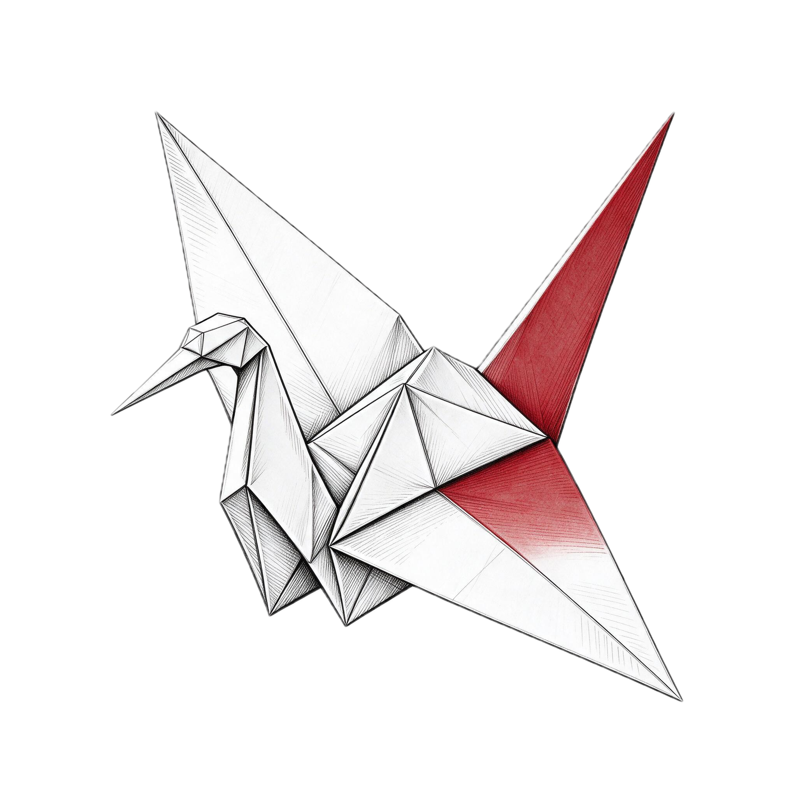
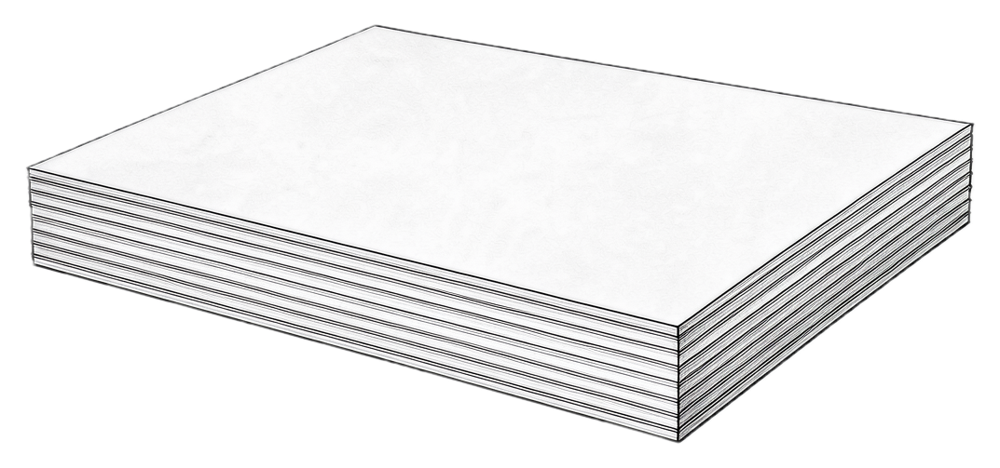
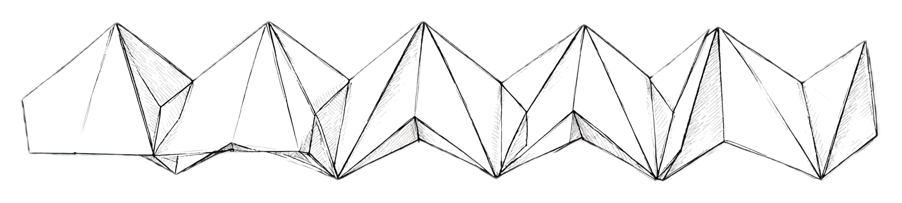

Fold a chapter into speech.
Upload a textbook chapter, notes or a PDF. It comes back as natural neural speech with the exact sentence being spoken lit on the page — so your eyes and your ears stay on the same line, from the first fold to the last.
折りori — to fold 読みyomi — to read

Bring the chapter you keep postponing. Press play, and read along.
free · no account · no api key
One sheet. One pull. Out loud.
A dense chapter arrives as one flat, overwhelming page. Oriyomi creases it into folds — the sections it already has — and each fold becomes clean speech you can follow. The fold you are on is the fold being spoken.

one sheet
one pullYomi means to read.
A dense chapter is a flat, overwhelming sheet. The hard part is not reading it — it is starting, staying oriented inside it, and knowing afterwards whether any of it stuck.
Oriyomi creases the sheet. Structure detection finds the chapters and sections and turns them into folds; each fold is spoken by a neural voice you can follow by ear and by eye. First fold plays while the rest are still generating.
The lit sentence is the spoken sentence.
Not paragraph scrolling. Not a moving highlight you have to chase. The line being read to you is the line wearing the mark.
Bring one chapter. Read it tonight.
free · no account · no api key